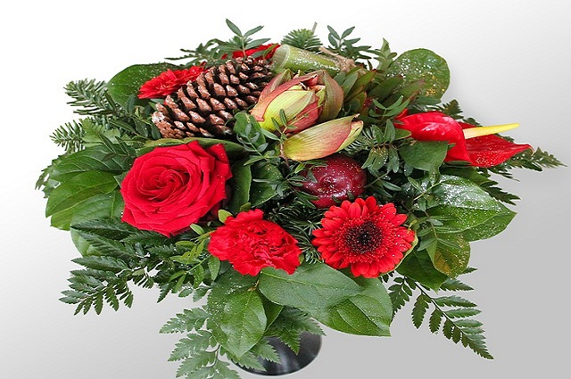

Termékek
Fedezze fel széles termékkínálatunkat - friss vágott virágok, csokrok, kosarak és ajándéktárgyak minden alkalomra.
Legnépszerűbb termékeink
Rózsa csokor
Gyönyörű rózsák egy csokorban, tökéletes ajándék minden alkalomra.
Kis csokor: 5000 Ft
Nagy csokor: 10000 Ft
Liliom csokor
Elegáns liliomok, amelyek minden helyiséget feldobnak.
Kis csokor: 4000 Ft
Nagy csokor: 8000 Ft
Nyári virágcsokor
Élénk színekben pompázó nyári virágok egy csokorban, hogy otthonodba varázsolja a nyár hangulatát.
Kis csokor: 3500 Ft
Nagy csokor: 7000 Ft
Tavaszi virágcsokor
Színes tavaszi virágok egy csokorban, hogy otthonodba varázsolja a tavaszt.
Kis csokor: 3000 Ft
Nagy csokor: 6000 Ft
Őszi virágcsokor

Meleg színekben pompázó őszi virágok egy csokorban, hogy otthonodba varázsolja az ősz hangulatát.
Kis csokor: 4000 Ft
Nagy csokor: 8000 Ft
Karácsonyi virágcsokor
Karácsonyi hangulatot idéző virágok egy csokorban, hogy otthonodba varázsolja a karácsony szellemét.
Kis csokor: 4500 Ft
Nagy csokor: 9000 Ft
Esküvői virágcsokor
Elegáns és romantikus virágok egy csokorban, hogy tökéletes kiegészítője legyen esküvői megjelenésének.
Kis csokor: 6000 Ft
Nagy csokor: 12000 Ft
Bazsarózsa virágcsokor
Elegáns bazsarózsa virágok egy csokorban, hogy kifejezze részvétét és tiszteletét a gyászolók iránt.
Kis csokor: 5000 Ft
Nagy csokor: 10000 Ft
Tulipán csokor
Friss és színes tulipánok egy csokorban, hogy otthonodba varázsolja a tavasz hangulatát.
Kis csokor: 4500 Ft
Nagy csokor: 9000 Ft